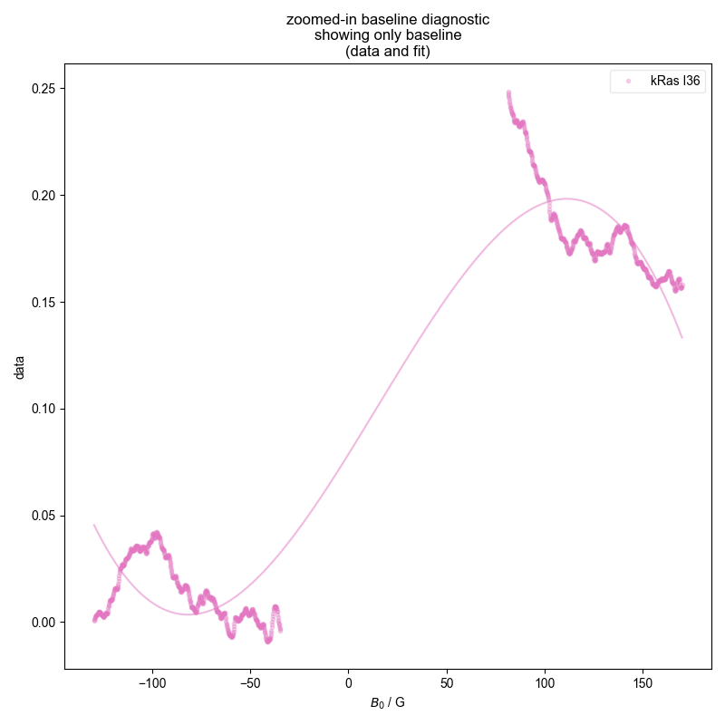
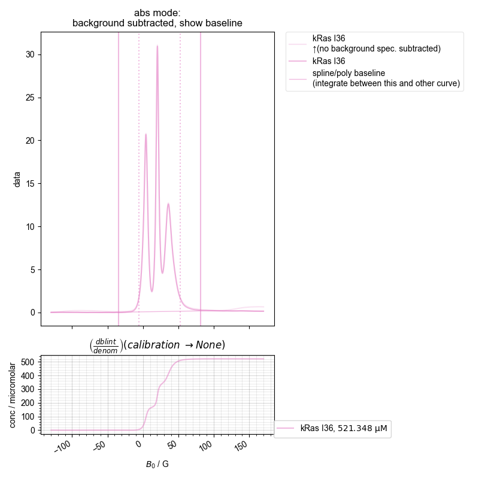
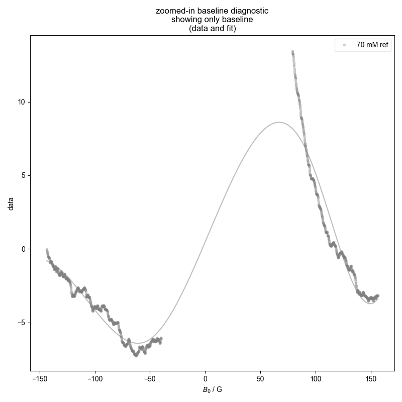

Note
Go to the end to download the full example code
Quantify the Double Integral of an ESR spectra (QESR)¶
Calculate the concentration of spin label present in a sample based on the double integral of an ESR spectra.
An ESR spectra should be collected for both the sample of interest as well as a “background” (typically water for aqueous samples). The spectra is rescaled according to it’s acquisition parameters (e.g., Q value, diameter of capillaries, modulation amplitude, gain, etc) and multiplied by a proportionality constant that is defined in your pyspecdata config file.
In order to properly run this example, your config file should have the following values under General:
220720new propfactor = 1.715e-10
220720new q = 4600
qesr caps diameter = 0.704
default calibration = 220720new
default diameter = qesr caps
Note that the diameter is given in units of mm.
- 
- 
- 
the stored concentration is 69.93816677405941 millimolar
the stored concentration is 521.3475578866337 micromolar
1: ras baseline diagnostic
{'print_string': '\\par'}
{'width': 0.9}
2: ras absorption, bg. no bl. |||G
{'print_string': '\\textbf{\\texttt{220804_rasI36_MTSL.DSC}}\\par'}
{'print_string': '\\par'}
3: calibration experiment baseline diagnostic
{'print_string': '\\par'}
{'width': 0.9}
4: calibration experiment absorption, bg. no bl. |||G
{'print_string': '\\textbf{\\texttt{220720_stock_4.DSC}}\\par'}
{'print_string': '\\par'}
\par
\textbf{\texttt{220804_rasI36_MTSL.DSC}}\par
\par
\par
\textbf{\texttt{220720_stock_4.DSC}}\par
\par
from matplotlib.pyplot import rcParams
from pyspecProcScripts import QESR
from pyspecdata import figlist_var, find_file
import pickle
# sphinx_gallery_thumbnail_number = 2
rcParams["image.aspect"] = "auto" # needed for sphinx gallery
pickle_file = "TEMPOL_rerun_conc.pickle" # when complete, the
# concentration is stored here
with figlist_var() as fl:
fl.basename = "ras" # I want different basenames so these show up on
# different plots, because they have very
# different concentrations
c = QESR(
"220804_rasI36_MTSL.DSC", # filename
label="kRas I36", # label for legends
exp_type="francklab_esr/Farhana", # location of file
diameter_name="QESR caps",
background=find_file(
"220804_water.DSC", exp_type="francklab_esr/Farhana"
)[
"harmonic", 0
], # background used for background subtraction - loaded above
pickle_file=pickle_file,
fl=fl,
)
fl.basename = "calibration experiment"
c = QESR(
"220720_stock_4.DSC", # filename
label="70 mM ref", # label for legends
exp_type="francklab_esr/alex", # location of file
diameter_name="QESR caps",
pickle_file=pickle_file,
fl=fl,
)
with open(pickle_file, "rb") as fp:
pickle_vars = pickle.load(fp)
print("the stored concentration is", pickle_vars["70 mM ref"])
print("the stored concentration is", pickle_vars["kRas I36"])
Total running time of the script: (0 minutes 2.328 seconds)